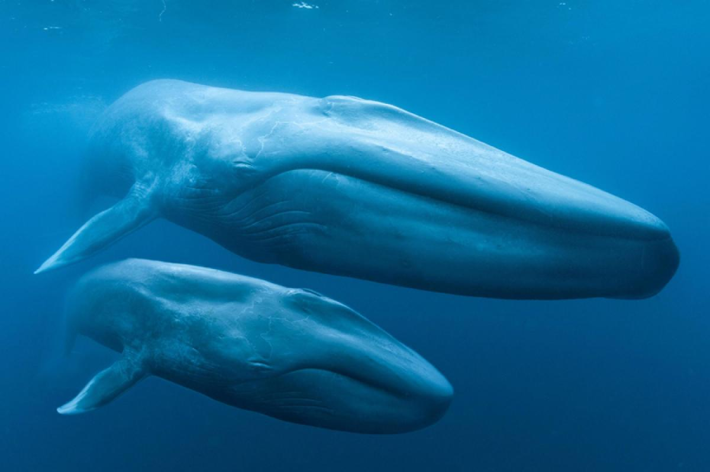
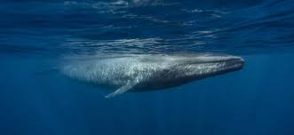
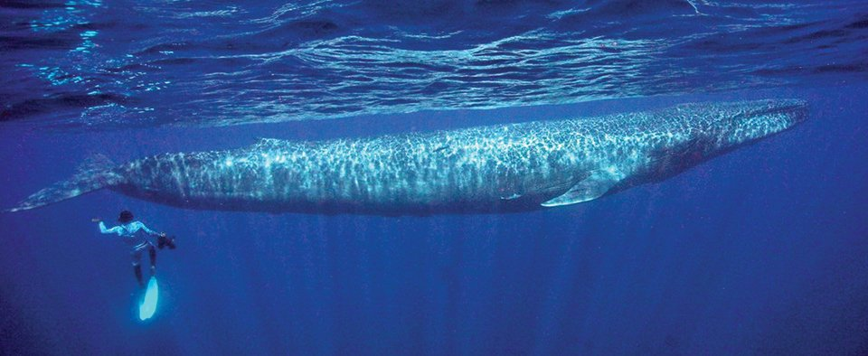

The largest animal on Earth
Blue Whale
About Blue Whale
| Characteristic | Value |
|---|---|
| Weight | Largest found: About 200 tons |
| Size | Up to 98 feet (30 meters) |
| Speed | 20 mph (32 km/h) |
| Lifespan | Up to 90 years |
| Foods | Krill and other small marine organisms |
| Predators | Humans (historically) |
| Family | Balaenopteridae |
| Scientific name | Balaenoptera musculus |
| Numbers left | Estimated 10,000 to 25,000 |
| Conservation Status | Endangered |
| Habitat | Oceans worldwide |
Fun Facts about Blue Whale
Blue whales are the largest animals ever known to exist on Earth
Largest animals ever known
Blue whales are the largest animals and among the loudest creatures on the planet. Their sounds can be heard from miles away.
A blue whale's tongue can weigh as much as an elephant
A blue whale's tongue can weigh as much as an elephant
A blue whale's tongue alone can weigh as much as an elephant, and its heart can be as large as a car.
Blue whales are filter feeders
Blue whales are filter feeders
Blue whales feed by opening their mouths wide and swimming through large groups of krill, filtering out the tiny crustaceans using baleen plates in their mouths.
Blue whales have heartbeats that can be heard from over 2 miles away
Loud heartbeats
Blue whales have enormous hearts, and their heartbeat's low-frequency sound can be detected from a distance of more than 2 miles.
My Population
Videos @NatGeo
Gallery


